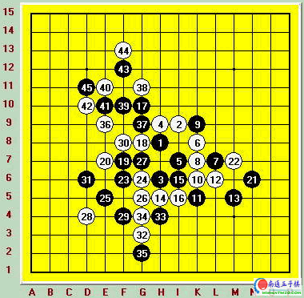

05年上海连珠名人战第三轮对陈文夏[图]
#1 05年上海连珠名人战第三轮对陈文夏[图]作者：有志青年 发表时间：2007-3-18 14:04:39

第一天的比赛结束后，两轮全胜的竟然只有我一个。这样的感觉确实很美妙，而且通过前两轮的比赛以及比赛后的拆解过程我的计算力已经完全恢复到了颠峰状态。这种状态下的我确实没有畏惧过什么人。第二天第一轮我又遭遇了另一名上海本地棋手，也就是被海棠称呼为战士的陈文夏。对于他了解的其实并不多，只是知道他的棋及其的稳健，如果说朱建锋的棋在上海棋手中属于攻击型的，薛文夕是防守型的。那陈文夏就是介于两者之间。而且陈的棋非常有韧性，不会因为局面的千变万化而转变，再加上出色的计算能力。确实是一个令人敬佩的对手。比赛开始前我仔细回忆过以前他所下过的对局，因为在这方面我的总结不如吴昊，所以只能自己回忆，吴昊是专门做了个谱库，里面收集国内所有知名棋手大部分的对局，每次比赛前都可以通过对手以前的对局来分析对手。这点他确实做的很好。经过分析我发现平衡开局还没多少人能在陈的身上得到什么便宜。而明岚新山等开局根据网络中的流传他也是非常了解的。要想战胜这样一个防守稳健攻击有层次开局知识丰富计算力出色的棋手，有什么办法呢？后来想想比赛是猜先，还不一定是我的先手，就不再去思考这个问题了。 #2 Re:05年上海连珠名人战第三轮对陈文夏[图]作者：五子天下 发表时间：2008-3-30 11:11:04
第三轮：黑：陈文夏 白：吴镝 和棋
比赛开始后经过猜先竟然又是我先手，我开始和旁边的曹东笑谈，看来这次比赛我真的是冲全先去的咯。。由于比赛前也没想到什么好的办法。我开始用另一种方法来选择开局了。我站起来开始看其他棋手都开的什么局。经过观察后终于决定开出了明星。要知道在这样重大的比赛中开明星是需要很大勇气的。因为明星开局经过数年的研究基本上已经确定了黑接近必胜的结论。陈文夏也是一个网络成长起来的棋手，那些结论他不可能不知道。那我依靠的就是出怪招和靠计算来找出他攻击中的点点破绽来做文章了。另外我开明星也是因为突然回忆起02年联众第一届网络联赛中，我和白衣在决赛中的第一局来。那就是一局明星，前面我执黑还在软件的辅助下拥有了及其巨大的优势。但始终差了一点。后来虽然拆出了必胜。但那个必胜太复杂了。所以决定这次也使用那个变化来考验下陈文夏的攻击能力。开出明星后陈交换必然。以下一路定式到黑13.14原来认为的最强是在G8。但那个变化在我以前的研究中已经得到了黑必胜的结论（事实上我的结论是错误的，后来输给山口就是我那个错误结论酿下的苦果）。14-H5我的走法把局面的主导全部给了黑棋，下面就看陈文夏是否可以连续走出最强手直到取胜了。15黑明显的便宜，16更是苦防的一手。白没有丝毫的反击能力。这样的局面做为下白的一方是非常痛苦的。黑棋随意的走法白也要顾及到很多东西。17！强手。也是我研究中必胜的开端。但在我的研究中黑17需要先走L4.现在黑省略了这一交换似乎原先白的防法就有问题了。白这里只能很无奈的去封锁黑斜二向上过渡的线路。19黑继续扩大优势。从19可以看出陈不是攻击很偏激的棋手。非常的有层次。想在棋盘四处做优势，让白顾此失彼。20的选择是很痛苦的。一度我以为自己已经必败了。大家可以看到F10，E8，H11这些点都是黑很好的攻击点。针对这些点后面黑可以出现的VCT以及白的防点我进行了深入的计算。可说把这个局部黑所有可能的走法全算完后发现了实战的20.这个点是将来黑联系上下两块的要点。防守只能选择防在这里。走完20后陈文夏也发现单纯的依靠某个局部很难胜了。21开始发展右边的优势。22又是痛苦的选择。一度我非常想走在I10。干脆的不去管黑在下面那块棋。因为那块棋黑想取胜只有先O7活三之后做VCF，做VCF有四个点O5 N5 N7 M7,前三个点我计算后都发现了白强防。黑没有后续手段取胜。M7我也计算了下一开始也没找到黑如何取胜。但在我落子前又复算了一次。突然发现了黑如果走在M7.白唯一防是O5，之后黑M8跳活三无论白防在中间还是外面黑都可以利用到O10这个点成杀。这下22走到K10的设想不成立了。既然M7是黑在这个局部取胜的关键点。也是黑向上过渡的关键点。那白22我老实的防在了M7。18.20.22三手棋可说消耗了我全部的心力了。但效果也出来了。成功的把黑的优势消耗掉了很多。虽然没说完全防守结束。但最艰苦的阶段肯定是过去了。22后陈文夏也感觉不到速胜的希望了，开始发挥他稳健的风格。23破坏白将来可能出现的好形状，而且继续保持一定的攻击。但这样的攻击和刚刚经历过那三手压力比起来小了很多。24彻底打断这条斜线，进一步削弱了黑的优势。25！当我看到这手25的时候完全放松了。25是一手在局面上完全防守的棋了。说明这盘我已经肯定输不了了。因为陈在心理上已经没有了取胜的打算。完全是在破坏白的棋了。战术成功后心情的舒畅是难以形容的，尤其是在棋局才进行到20多手就有了这个结果更是让我有点忘乎所以。做为一名棋手是绝对不能被这样的情绪所左右的。而我还